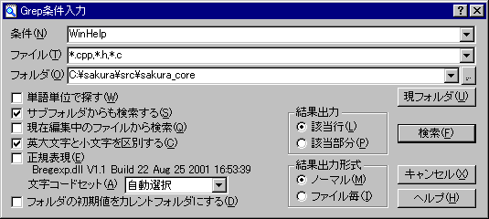

Grep
ディスクにある複数のファイルから、指定した文字列を検索することができます。
指定したフォルダの下層のフォルダを全て検索することもできます。
・検索結果は、別のウィンドウが作成されて、そこに表示されます。
・検索結果から、条件と一致した箇所に直接ジャンプ（
タグジャンプ）することができます。
・
共通設定 『検索』プロパティ GREP の設定によっては、GREP結果から行をダブルクリック・Enterすることでも、該当する場所にジャンプします。
(条件) …… 検索条件を指定します。何も指定せずに実行すると、ファイル名検索ができます。ただし、フォルダ名検索はできません。
(ファイル) … 検索対象となるファイル指定します。ワイルドカードが使えます。
カンマ、スペース、セミコロン(, ;)のどれかで区切ると複数の条件を指定できます。
ファイル名に(, ;)を含む場合は、ダブルクオーテーションで囲うことで、ひとつのファイル名として扱えます。
ファイルパターンの先頭に!を付ける(例: !*.obj)と，そのパターンに当たるファイルをGrep対象から外します。
指定位置にかかわらず除外指定は検索指定より優先されます．
何も指定しない場合は、「*.*」を指定したことになります。
(フォルダ) … 検索対象ファイルのあるフォルダを指定します。エクスプローラなどからのフォルダのドロップも受け付けます。
[現フォルダ]ボタン
このボタンを押すと現在開いているファイルを元に「フォルダ」を設定します。
□
単語単位で探す
単語として識別するもののみ検索します。キーワードに単語以外を入れると何もヒットしません。
■
サブフォルダからも検索する
指定フォルダの下層フォルダからも検索するかどうかを指定します。
□
現在編集中のファイルから検索
現在編集中のファイルのみを検索対象に指定します。
編集中の内容ではなく、最後に保存されたファイル内容から検索して一覧を作成します。
※データから検索
□
英大文字と小文字を区別する
半角英字の大文字と小文字を区別して検索するかどうかを指定します。
□
正規表現 … 検索条件に、
正規表現を使うかどうかを指定します。
□
文字コードセット
検索対象となるファイルの
文字コードセットを選択します。
自動選択、SJIS、JIS、EUC、Unicode、UnicodeBE、UTF-8、CESU-8、UTF-7から選択します。
(sakura:1.6.6.0以前)どの文字コードを選択しても、検索時には、SJISに変換してから検索します。
□
フォルダの初期値をカレントフォルダにする
現在開いているファイルがあるフォルダを(フォルダ)の初期値にします。次回のダイアログ表示時に反映されます。
<結果出力> … 検索条件に合致した箇所の出力方法を指定します。合致した箇所はその先頭の合致箇所の位置が示され、タイプ別設定 『カラー』プロパティで「検索結果」に指定した色でハイライト表示されます。
◎該当行 … 合致した箇所のある行全体を表示します。
○該当部分 … 合致した箇所のある行のうち先頭の合致箇所だけを表示します。
 ヒント
ヒント
単語単位で検索したときは、すべての合致箇所が表示されます。
<結果出力形式> … 検索条件の結果の出力形式を選べます。
◎ノーマル … 一つづつ列挙して出力します。
○ファイル毎 … ファイル毎にまとめて出力します。いわゆるWZ風の形式です。

※正規表現は、正規表現ライブラリによって実現していますので、お持ちでない方は別途入手していただく必要があります。
ヒント
編集中のドキュメント、Grep結果などの中から行を抽出したい場合は、「検索」の[該当行マーク]と「ブックマーク一覧」の[コピー]を組み合わせると便利です。
■マクロ構文
・構文: Grep( str1 :String, str2 :String, str3 :String, int4 :Integer );
str1 検索文字列
str2 検索対象にするファイル名
str3 検索対象にするフォルダ名
int4 オプション（省略可能）
・記録: ○
・解説
オプションには以下の値の組み合わせを指定できます。
0x01 サブフォルダからも検索する（省略時規定値）
0x02 この編集中のテキストから検索する（未実装）
0x04 英大文字と英小文字を区別する（省略時規定値）
0x08 正規表現
0x10 文字コード自動判別
「結果出力」
0x00 該当行
0x20 該当部分（省略時規定値）
「出力形式」
0x00 ノーマル（省略時規定値）
0x40 ファイル毎
「文字コードセット」
0x0000 SJIS（省略時規定値）
0x0100 JIS
0x0200 EUC
0x0300 UNICODE
0x0400 UTF-8
0x0500 UTF-7
0x0600 UNICODE(BigEndian)
0x6300 自動選択
文字コード自動判別を設定した場合と文字コードセットを 自動選択にした場合の動作は同じです。
 注意
注意
キーマクロ中では 10進数の定数表記しか受け付けません。
オプションは10進数に直して記述してください。
注意
Grepのダイアログをマクロで出すことはできません。